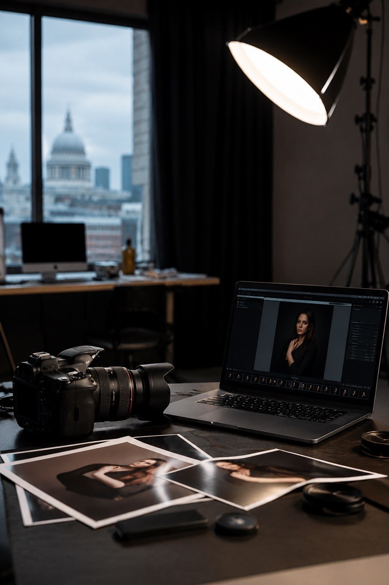
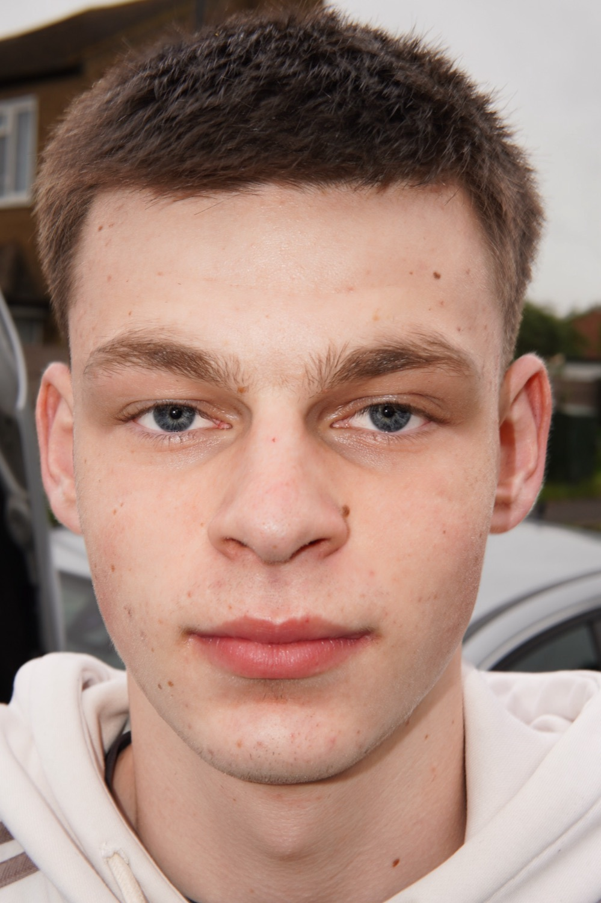
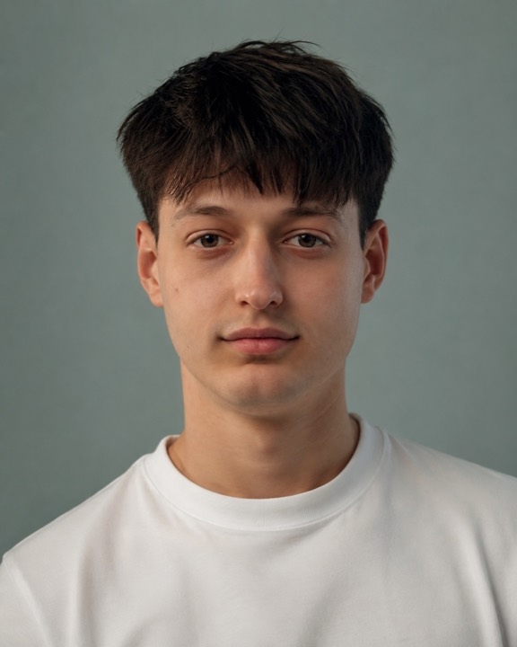

About
About TLMK Studio
Friendly, professional photography made for real people and real memories.
TLMK Studio is a small London-based photography studio creating clean, cinematic images for individuals, brands, and personal stories. We keep shoots calm, friendly, and professional, so people feel comfortable in front of the camera and leave with photos that feel natural, polished, and worth keeping.
Our philosophy is simple: professional photography should feel personal, honest, and accessible. We focus on strong light, careful composition, and clear direction, offering polished images at a budget-conscious level without making the experience feel rushed or generic.
The studio

Founder & lead photographer

Editor
Bookings
Bookings open — reach out via the form or DM on Instagram.
Book a session